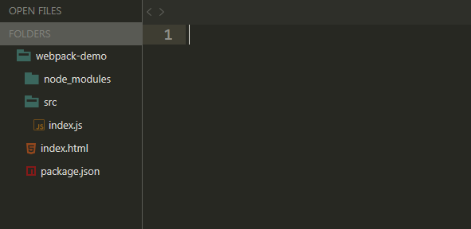
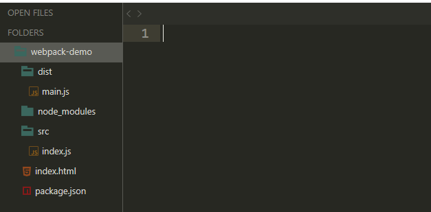
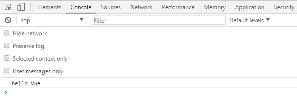
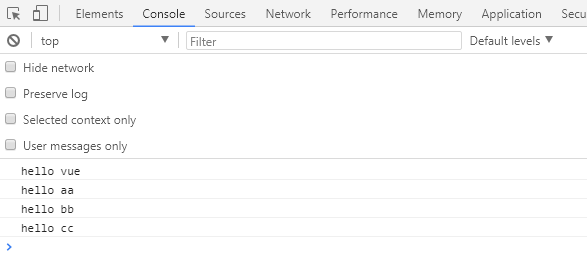
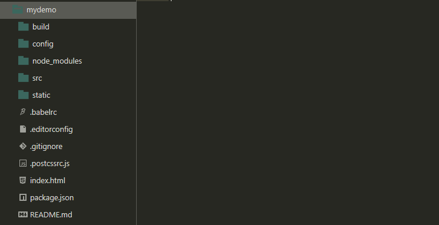
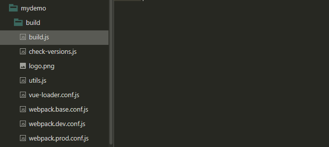
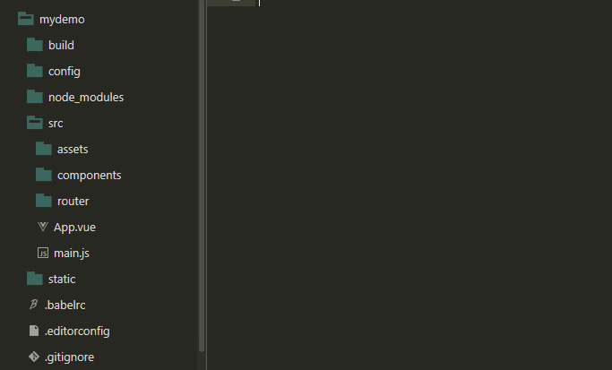

Node.js
Node.js介绍
Node.js是一个Javascript运行环境(runtime environment)，发布于2009年5月，由Ryan Dahl开发，实质是对Chrome V8引擎进行了封装。
Node.js安装
window安装
https://nodejs.org/en/ 傻瓜式安装、安装时未勾选环境变量则需自己配置。
打开cmd，输入node，打上一段JS验证一下。
npm
npm是JavaScript这门语言的第三方库管理工具
安装好Node.js之后，默认已经安装好了npm包管理工具，打开输入cmd输入npm测试一下。
使用npm包管理工具安装第三方库
全局安装与本地安装、开发依赖和生产依赖
https://segmentfault.com/a/1190000017787636
npm 全局安装和本地安装
https://blog.csdn.net/qq_27095799/article/details/81908158
全局安装
全局方式安装的npm包，全局可用。任何项目都可以使用
1 | npm install -g <package> |
本地安装
方式一：
1 | npm init |
特点：
1 | - 会把包安装到node_modules目录中 |
方式二：
1 | npm init |
特点：
1 | - 会把包安装到node_modules目录中 |
方式三：
1 | npm init |
特点
1 | - 会把包安装到node_modules目录中 |
卸载全局包
1 | npm uninstall <package> -g |
卸载本地包
1 | npm uninstall <package> -S, --save: Package will be removed from your dependencies. |
使用步骤
创建文件夹，初始化为npm环境
1 | mkdir myproject |
npm init初始化的环境
1 |
|
按需填入上述信息，最后输入yes，项目环境初始化完毕。如果使用默认信息，可以直接使用npm init -y进行初始化。
1 | name 项目名称 |
查看package：
1 | npm is <package> |
更新package：
1 | npm update <package> |
搜索package：
1 | npm serach <package> |
package.json详解
1 | "private": true, |
private可选字段，布尔值。如果 private 为 true，npm 会拒绝发布。这可以防止私有 repositories 不小心被发布出去;dependencies与devDependencies在开发阶段，我们需要对开发的模块进行单元测试，这时在开发环境 devDependencies 下就要安装单元测试模块 Mocha。
在生产环境 dependencies，用户直接使用项目，此时项目的开发已全部完成。这时就不需要单元测试模块了，再加上只会影响性能。
- dependencies 指定了项目生产环境时所依赖的模块,
- devDependencies 制定了项目开发环境时所依赖的模块。
scripts该字段指定了运行脚本命令的npm命令行缩写，比如start指定了运行npm run start时，所要执行的命令。下面的设置指定了npm run dev、npm run bulid、npm run unit、npm run test、npm run lint时，所要执行的命令；
1
2
3
4
5
6
7"scripts": {
"dev": "node build/dev-server.js",
"build": "node build/build.js",
"unit": "cross-env BABEL_ENV=test karma start test/unit/karma.conf.js --single-run",
"test": "npm run unit",
"lint": "eslint --ext .js,.vue src test/unit/specs"
}engines字段指定依赖的node版本publishConfig当我们开发完自己的项目想要将它发布到 Npm 仓库就需要使用这个属性。默认情况下我们是往 Npm 公共仓库中发布包，默认地址是：
https://www.npmjs.com/，此时在package.json文件中可以不加这个属性。但是如果公司内部搭建了 Npm 私有仓库，此时发布包就不是往
https://www.npmjs.com/这个地址上发布了，而是公司内部提供的地址，如：http://gongsineibu/nexus/repository/npm-hosted/。此时配置如下：1
2
3"publishConfig": {
"registry": "http://gongsineibu/nexus/repository/npm-hosted/"
}publicConfig字段决定了我们的包发布到哪里。
https://pizzali.github.io/2018/10/29/npm/
npm与package.json详解
https://blog.csdn.net/xingmeiok/article/details/90299089
webpack
webpack介绍
webpack安装
1 | npm install -g webpack webpack-cli |
概念
入口文件
入口起点(entry point)指示 Webpack 应该使用哪个模块，来作为构建其内部依赖图的开始。进入入口起点后，Webpack 会找出有哪些模块和库是入口起点（直接和间接）依赖的。
每个依赖项随即被处理，最后输出到称之为 bundles 的文件中。
出口文件
出口文件告诉 Webpack 在哪里输出它所创建的 bundles，以及如何命名这些文件，默认值为dist。基本上，整个应用程序结构，都会被编译到你指定的输出路径的文件夹中。
loader
loader让 webpack 能够去处理那些非 JavaScript 文件（webpack 自身只理解 JavaScript）。loader 可以将所有类型的文件转换为 webpack 能够处理的有效模块，然后你就可以利用 webpack 的打包能力，对它们进行处理。
本质上，webpack loader 将所有类型的文件，转换为应用程序的依赖图（和最终的 bundle）可以直接引用的模块。
使用
1 | npm init -y |
在webpack-demo目录下面创建一个src目录，用于存放我们程序的原始文件如src/index.js，然后在webpack-demo目录下面创建一个index.html文件，用于使用打包后的出口文件，新的目录结构如下：

我们在index.html文件中写入最基础的html代码，它在这里目的在于引入打包后的js文件，Webpack4默认的输出文件为dist/main.js。
1 | <!-- index.html --> |
index.js代码：
1 | let greeting = "Hello Webpack!"; |
webpack4打包
1 | webpack --mode development/production 进行模式切换 |
Webpack4固定入口目录为src，入口文件必须为index.js，打包后文件在新增的dist目录下, 出口文件为main.js，开始打包。
新目录：

打开index.html文件的控制台：

使用webpack进行ES6的模块化编程
src目录下新建hello.js文件：
1 | let aa = "hello aa"; |
index.js中import：
1 | import {aa, bb} from "./hello.js"; |
重新打包，查看index.html：

注意，每一个文件只能有一个export default，import会将没有命中的变量名映射到export default导出的数据上面。
Vue CLI
安装
全局安装
1 | npm install -g @vue/cli |
本地安装
1 | npm install @vue/cli --save |
实例
vue基于webpack构建项目
mydemo是我们的项目名称
1 | vue init webpack mydemo |
项目结构

目录结构说明
build目录

build目录中的文件主要是用来进行webpack配置。
其中最重要的就是webpack.base.conf.js, webpack.dev.conf.js, webpack.prod.conf.js三个文件，分别是基本webpack配置、开发环境webpack配置、生产环境webpack配置。
npm run build命令是用来构建生产环境的，而build.js文件就是该命令的入口配置文件，主要用于生产环境。
config目录

config目录中的文件是用来配置项目测试和运行环境的。
在index.js文件中有一个proxyTable属性，该属性的属性值如果加上对应的后台地址和端口，就可以和后台进行联调。
static目录
static目录用来存储项目的静态文件。它是真正的静态资源，完全不被webpack处理。
src目录
src目录存放的是我们项目的源文件，它是整个项目使用频率最高的文件夹。
assets目录存放的是公共的资源，会被webpack当成模块资源处理；
components目录存放的是我们整个项目的所有组件；
router目录则存放的是我们整个项目的路由文件；
App.vue文件是所有vue文件的入口；
main.js对应App.vue 创建vue实例，也是入口文件，对应webpack.base.config.js里的入口配置文件。